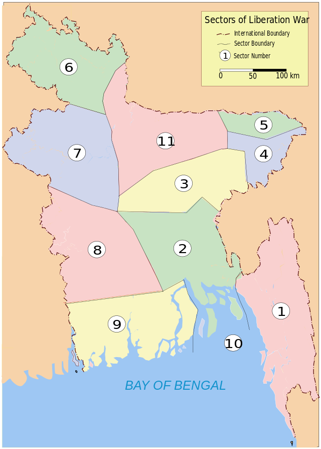

Sectiors

List of sectors and subsectors
Sector 1
Area
Chittagong District, Chittagong Hill Tracts, and the entire eastern area of the Noakhali District on the banks of the river Muhuri. The headquarters of the sector was at Harina.
Sector Commander
• Major Ziaur Rahman (April 10, 1971 – May 15, 1971)
• Captain Rafiqul Islam (June 10, 1971 – April 6, 1972)
Sub Sectors (Commanders)
1. Rishimukh
(Captain Shamsul Islam);
2.Sreenagar
(Captain Matiur Rahman, Captain Mahfuzur Rahman);
3.Manughat
(Captain Mahfuzur Rahman);
4.Tabalchhari
(Sergeant Ali Hossain); and
5.Dimagiri
(Army Sergeant, name unknown to date).
Sector 2
Area
Districts of Dhaka, Comilla, and Faridpur, and part of Noakhali District.The headquarters of the sector was at Melaghar
Sector Commander
• Major Khaled Mosharraf (April 10, 1971 – September 22, 1971)
• Major ATM Haider (Sector Commander September 22, 1971 – April 6, 1972)
Sub Sectors (Commanders)
1. Gangasagar, Akhaura and Kasba
(Mahbub, Lieutenant Farooq, and Lieutenant Humayun Kabir);
2. Mandabhav
(Captain Abdul Hamid);
3. Shalda-nadi
(Mahmud Hasan);
4.Matinagar
(Lieutenant Didarul Alam);
5.Nirbhoypur
(Captain Akbar, Lieutenant Mahbub);
6. Rajnagar
(Captain Jafar Imam, Captain Shahid, and Lieutenant Imamuzzaman)and
7. Nagarkandha
(Sayed Abdul Halim)
Sector 3
Area
Chittagong District, Chittagong Hill Tracts, and the entire eastern area of the Noakhali District on the banks of the river Muhuri. The headquarters of the sector was at Harina.
Sector Commander
• Major K. M. Shafiullah (April 10, 1971 – July 21, 1971)
• Captain A. N. M. Nuruzzaman (July 23, 1971 – April 6, 1972)
Sub Sectors (Commanders)
Asrambari
(Captain Aziz, Captain Ejaz);
Baghaibari
(Captain Aziz, Captain Ejaz);
Hatkata
(Captain Matiur Rahman);
Simla
(Captain Matin);
Panchabati
(Captain Nasim);
Mantala
(Captain MSA Bhuyan);
Vijoynagar
(Captain MSA Bhuyan);
Kalachhora
(Lieutenant Majumdar);
Kalkalia
(Lieutenant Golam Helal Morshed); and
Bamutia
(Lieutenant Sayeed)
Sector 4
Area
Area from Habiganj District on the north to Kanaighat Police Station on the south along the 160-kilometre-long (100 mi) border with India. The headquarters of the sector was initially at Karimganj and later at Masimpur.
Sector Commander
• Major Chitta Ranjan Dutta (April 10, 1971 – April 6, 1972)
• Captain A Rob
Sub Sectors (Commanders)
Jalalpur
(Mahbubur Rob Sadi);
Barapunji
(Captain A Rab & Lieutenant Amirul Haque Chowdhury);
Amlasid
(Lieutenant Zahir);
Kukital
(Flight Lieutenant Kader, Captain Shariful Haq);
Kailas Shahar
(Lieutenant Wakiuzzaman); and Subedar Major ( Asst Director) Fazlul Haque Chowdhury EX EPR(from April'71 - August '71)
Kamalpur
(Captain Enam)
Sector 5
Area
Area from Durgapur to Dawki (Tamabil) of Sylhet District and the entire area up to the eastern borders of the district. The headquarters of the sector was at Banshtola.
Sector Commander
• Major Mir Shawkat Ali (April 10, 1971 – April 6tb, 1972)
Sub Sectors (Commanders)
Muktapur
(Captain Qazi Faruq Ahmed, Subsector Commander, 16 June 1971 till 1 February 1972; Subedar Mujibur Rahman, Second in Command; Nayeb Subedar Nazir Hussain, Admin in charge(non-combatant))
Dawki
(Subedar Major BR Chowdhury, (non-combatant));
Shela
(Captain Helal);
Bholaganj
(Lieutenant Taheruddin Akhunji);
Balat
(Sergeant Ghani, Captain Salahuddin and Enamul Haq Chowdhury); and
Barachhara
(Captain Muslim Uddin).
Captain Abdul
Mutalib was in charge of Sangram Punji (Jaflong) until 10 May 1971
Sector 6
Area
Rangpur District and part of Dinajpur District. The headquarters of the sector was at Burimari near Patgram.
Sector Commander
• Wing Commander M Khademul Bashar (April 10, 1971 – April 6, 1972)
Sub Sectors (Commanders)
Bhajanpur
(Captain Nazrul, Flight Lieutenant Sadruddin and Captain Shahriyar);
Patgram
(initially divided between junior commissioned officers of the EPR and later taken hold by Captain Matiur Rahman);
Sahebganj
(Captain Nawazesh Uddin);
Phulbari,
Kurigram (Captain Abul Hossain)
Mogalhat
(Captain Delwar); and
Chilahati
(Flight Lieutenant Iqbal)
Sector 7
Area
Rajshahi, Pabna, Bogra and part of Dinajpur District. The headquarters of the sector was at Tarangpur near Kaliaganj
Sector Commander
• Major Nazmul Huq (April 10 – September 27, 1971)
• Major Quazi nooruzzaman (September 30 – April 6, 1972)
• Subedar Major A Rab
Sub Sectors (Commanders)
Malan
(initially divided between junior commissioned officers and later taken hold by Captain Mohiuddin Jahangir);
Tapan
(Major Nazmul Huq, also commanded by commanding officers of the EPR);
Mehdipur
(Subedar Iliyas, Captain Mahiuddin Jahangir);
Hamzapur
(Captain Idris);
Anginabad
(unnamed freedom fighter);
Sheikhpara
(Captain Rashid);
Thokrabari
(Subedar Muazzam); and
Lalgola
(Captain Gheyasuddin Chowdhury).
Sector 8
Area
In April 1971, the operational area of the sector comprised the districts of Kushtia, Jessore, Khulna, Barisal, Faridpur and Patuakhali. At the end of May the sector was reconstituted and comprised the districts of Kuhstia, Jessore, Khulna, Satkhira and the northern part of Faridpur district. The headquarters of the sector was at Benapole.
Sector Commander
• Major Abu Osman Chowdhury (April 10 – July 17, 1971)
• Major Abul Manzoor (August 14, 1971 – A
Sub Sectors (Commanders)
Boyra
(Captain Khondakar Nazmul Huda);
Hakimpur
(Captain Shafiq Ullah);
Bhomra
(Captain Salahuddin, Captain Shahabuddin);
Lalbazar
(Captain AR Azam Chowdhury);
Banpur
(Captain Mostafizur Rahman);
Benapole
(Captain Abdul Halim, Captain Tawfiq-e-Elahi Chowdhury); and
Shikarpur
(Captain Tawfiq-e-Elahi Chowdhury, Lieutenant Jahangir).
Sector 9
Area
Barisal, Patuakhali, and parts of the district of Khulna and Faridpur.The headquarters of the sector was at Hasnabad
Sector Commander
• Major M. A. Jalil (July 17 – December 24, 1971)
• Major MA Manzur
• Major Joynal Abedin
Sub Sectors (Commanders)
Barisal
(Assistant Adjutant of Ansar & VDP Mr.Fakir Abdul Mazed);
Potuakhali
(Abdus Salam Mia) ; and
Shamshernagar.
Sector 10
Area
This sector was constituted with the naval commandos.
Sector Commander
• Commander HQ BD Forces (December 3–16, 1971)
Sub Sectors (Commanders)
None.
Sector 11
Area
Mymensingh and Tangail along with parts of Rangpur - Gaibandha, Ulipur, Kamalpur and Chilmari. The headquarters of the sector was at Teldhala until October 10, then transferred to Mahendraganj.
Sector Commander
• Major Nazmul Huq (April 10 – September 27, 1971)
• Major Quazi nooruzzaman (September 30 – April 6, 1972)
• Subedar Major A Rab
Sub Sectors (Commanders)
Mankarchar
(Flight Lt. M. Hamidullah Khan);[1]
Mahendraganj
(Captain Abu Taher; Lieutenant Mannan);
Purakhasia
(Lieutenant Hashem);
Dhalu
(Lieutenant Taher; Lieutenant Kamal);
Rangra
(Matiur Rahman)
Shivabari
(divided between junior commissioned officers of the EPR);
Bagmara
(divided between junior commissioned officers of the EPR); and
Maheshkhola
(a member of the EPR).